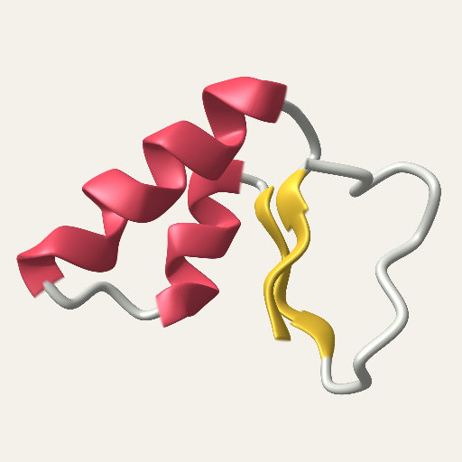
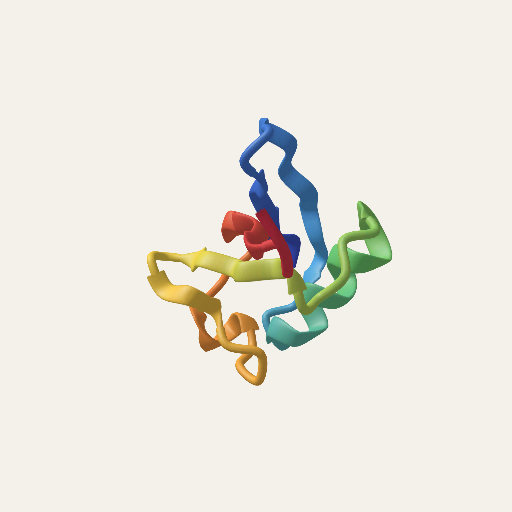
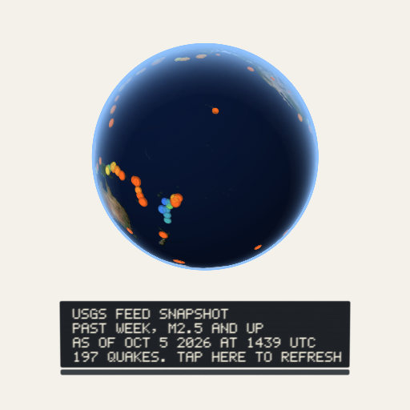
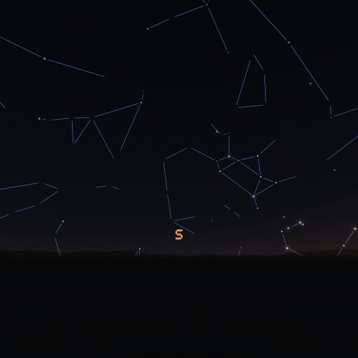
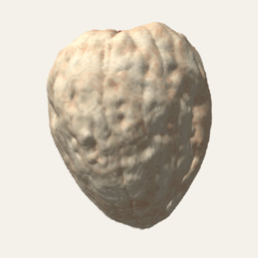
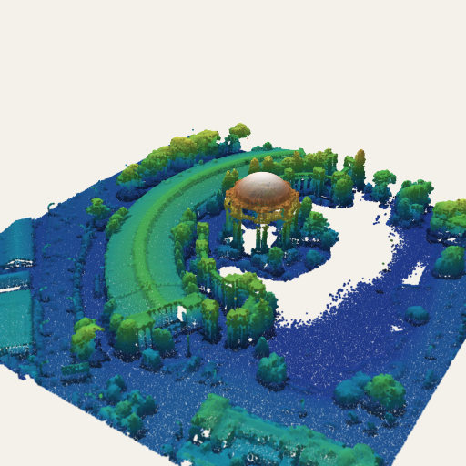
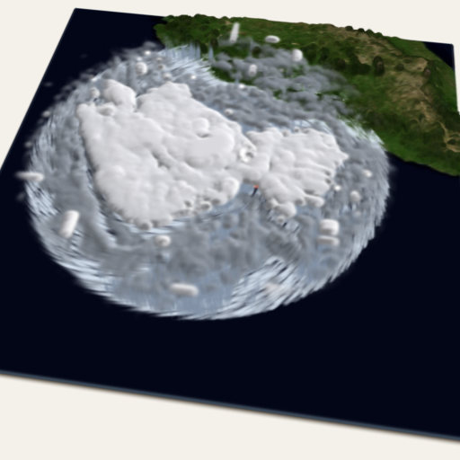
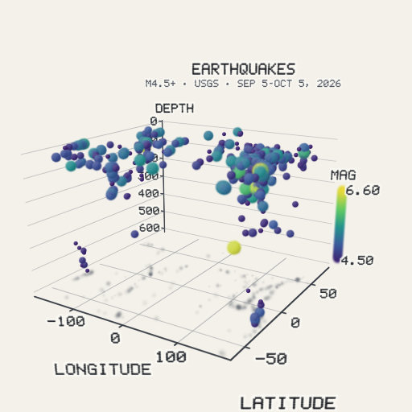

Chapter 7Real data as splats
A splat is a number-carrying blob: a place, three sizes, a turn, a color, an opacity. Data
is also numbers with places: the atoms of a protein, the quakes of last week, the stars over
your head, the density of a scanned walnut. This chapter is about turning such data into
splats, and doing it honestly: every toy here says where its data came from and how old it
is. Nearly all of these toys are behind the labs switch (add ?labs=1 to the
site's address); the paragraphs say which.
Molecules
What it is. A molecule is a list of atoms with places, in ångströms. The
Molecule viewer opens a structure file and draws it as splats. It reads PDB, mmCIF,
SDF/MOL, and XYZ files (src/molview/parse.js), takes the first model, and stops
with a message above 250,000 atoms. You can open a file from your device, or type a
four-character Protein Data Bank code and have the viewer fetch that entry. It draws balls
and sticks, space-filling atoms, a cartoon of the chains as ribbons, or the molecular
surface, and colors by element, chain, residue, B-factor (how much an atom blurs in the
crystal), position along a chain, or secondary structure. Tap two atoms for the distance
between them, a third for the angle. It is behind the labs switch.
How Splashery does it. Everything is an explicit splat
(src/molview/draw.js): an atom is a sphere of splats (in space-filling style,
one of its van der Waals radius), a bond is a stick of splats (a double bond is two thinner
sticks, a triple bond three), the cartoon is a ribbon of splats along a path through the
backbone, and the surface is a blobby surface made from a sum of bumps, one per atom. The
device's splat budget decides how many splats there are. A small molecule gets plenty per
atom. A big structure gets fewer, and below about six splats an atom becomes one round
Gaussian, so even a big structure opens on a phone: that is the level of detail (Chapter 2).
The files are read in a worker, off the page's main thread, and the structure is turned so
its widest spread lies across the screen. A turn keeps every distance and angle.
The PDB fetch. Typing a code asks files.rcsb.org for that one file
(public, no key, no account), only when you press the button. Nothing is sent but the code
in the address, nothing is stored, and the file is read on your device. The viewer refuses a
file over 60 MB. Five samples ship with the site, so the toy opens offline: crambin, the
green fluorescent protein, lysozyme, a stretch of B-DNA, and caffeine; each is a snapshot of
the entry, dated October 5, 2026, and the data are CC0 from the Protein Data Bank [14].

The Molecule viewer's cartoon

The Protein toy, on the Atoms shelf
Try it. Molecule viewer (labs), Protein, Molecule.
Earthquakes
What it is. A globe with a dot for every earthquake in a feed from the U.S. Geological Survey, drawn on a relief of the Earth. A bigger quake is a bigger dot. The color says how deep the quake was: shallow ones orange-red, middle ones yellow and green, and the deepest blue, as the USGS's own maps do. The globe is the Earth in true color with its relief. A tap plays the quakes in time order, each flashing as the timeline passes it.
How Splashery does it. The toy offers three views: the past week at magnitude 2.5 and up, the past month at 4.5 and up, and a year at 5 and up. The first two read the USGS's GeoJSON summary feeds [15] when the toy opens or when you tap its plaque to refresh. Each quake is a row of five numbers (time, longitude, latitude, depth in kilometers, magnitude). A quake with a missing magnitude or depth is left out rather than shown as zero. A dot's radius is 0.009 + 0.006 × (M − 2)1.4 times the globe's radius (for a magnitude of 2 or more), drawn as a flat disc of splats with a crisp edge, and a bigger dot gets more splats, in proportion to its area. The plaque beside the globe says what is showing: the feed, the number of quakes, and when it was made. If the feed cannot be reached within 9 seconds, or if the browser is being driven by a test tool, the toy shows the snapshot that ships with the site (197 quakes in the week view as of October 5, 2026, 14:39 UTC), and the plaque says "snapshot". The year view is always a snapshot, October 2025 to September 2026.
Why this way. Splashery has no server, so a live feed has to be read by your browser from a public, keyless address, and it has to degrade: an offline reader still gets a globe. The rules for every such toy are in the box at the end of this chapter.

Try it. Earthquakes (labs).
The night sky
What it is. The stars and planets above a place, for any date and time and any place. You stand at the center of the dome and look out; the Sun, the Moon, and the seven planets are placed from the date (the planets' tables are made for 1800 to 2050, and the toy says so when you go outside them), the Moon is lit on the side that faces the Sun (so its phase is the real geometry), and daylight washes the stars out faintest first.
How Splashery does it. The star catalog is a file of 5,071 stars: every star brighter than magnitude 6 in the HYG database [16], plus the fainter ones a constellation line needs. One splat each, sized by brightness and colored by temperature. The stars sit at their J2000 positions as one part, and the whole sky turns as one rigid piece: first precession to the date, then the sky's turn for the place's sidereal time (Meeus [17]). The planets use the approximate orbital elements that NASA's Jet Propulsion Laboratory publishes for 1800 to 2050 [18], solved with Kepler's equation, and the Moon uses the Astronomical Almanac's low-precision series, good to about 0.3 degrees in longitude. This is the same hinge as every part in Chapter 2. A star field turning about a point is a part turning about its pivot.
Your place. You pick a city, or tap Use my location, which asks your browser for it. That is the only time the toy asks. The place lives in the page's memory: it is not saved, not put in a link, and not sent anywhere. Both the stars and the constellation lines come from sources under CC BY-SA 4.0, and the toy's credit says so beside it.

Try it. Night sky (labs).
Volumes and point clouds
What it is. A CT scan or an MRI is not a surface but a block of numbers, one per little cube (a voxel), measuring how dense the material is there. A lidar scan is a cloud of points with places and sometimes colors. Both can be splats. The Volume viewer opens a medical or microscope scan and shows it as a block of splats you can cut through. The Point clouds toy opens a lidar scan or any list of points. Both are on the Studio shelf, behind the labs switch, and nothing is uploaded.
How Splashery does it: volumes. The viewer reads DICOM (a series of slices, a folder,
a zip, or one multi-frame file; uncompressed or RLE lossless), NIfTI (.nii and
.nii.gz), TIFF stacks, and raw files described by a small form
(src/volume/read.js). Slices are sorted by where the scanner put them, and the
spacing between slices comes from those places, so a scan that is thick in one direction
keeps its true shape. A volume is at most 8 million voxels in memory; a bigger one is
averaged down as it is read, so the viewer never keeps more than about 32 MB. The splats sit
on a lattice spaced to fit the device's budget. A density window (a lower and an
upper level) decides which values show; the presets are bone, soft tissue, and full range,
and for a CT in Hounsfield units bone is 300 to 1500 and soft tissue is −160 to 240. A color
map turns the value into a color and an opacity. A cutting plane on each axis, which a drag
moves, hides the splats on one side. A maximum-intensity view flattens the volume to
the brightest voxel along one axis. Splashery's engine has a splat kind for this
(volume): each splat carries its density, the shader tests it against the
window, and the cut is tested at the splat's place at rest, so the cut stays with the
specimen as it turns.
How Splashery does it: point clouds. The toy opens LAS, LAZ, PLY, XYZ, and PTS files (LAZ through the vendored laz-perf decoder, loaded only for a LAZ file). The points are drawn as splats within the device's budget, colored by height, by intensity, by classification (ground, vegetation, buildings, and the other codes a lidar file uses), or by the file's own colors. You can measure between two taps, crop, thin the cloud, and save it as PLY, LAS, or XYZ. The three samples are lidar from the U.S. Geological Survey's 3D Elevation Program, public domain: the Palace of Fine Arts and Fort Point in San Francisco, and Meteor Crater in Arizona, each thinned to 450,000 points.

A CT scan of a walnut

Lidar, colored by height
Why this way. A splat can stand for a voxel or a point without any new idea: it is a place, a size, and a color. What the toy has to add is a way to look inside, and that is the window and the cutting plane. Rendering a volume with splats gives up the smooth shading of a proper volume renderer, in return for the same engine, the same controls, and a saved link that opens it in the same viewer as everything else.
Try it. Volume viewer, Walnut CT scan, Point clouds (all labs).
Weather, maps, and the other data toys
Most of the data toys ship a dated snapshot that a tool on a build machine fetched once, so the page itself never calls a data service. The toys are:
- Hurricane (labs): Hurricane Polo, September 21 and 22, 2026. GOES infrared cloud tops over a satellite map of the Earth, with the eyewall and bands turning. A tap plays the day it grew from 70 to 155 knots, following the storm's best track.
- Tides at Bar Harbor (labs): a coastal height map and imagery of the harbor in Maine, with NOAA's tide predictions for a spring tide; a tap plays the day and the sandbar to Bar Island floods and dries.
- Grand Canyon, Mount St. Helens, and The sea floor (labs): heights from the USGS 3D Elevation Program and NOAA's ETOPO1 relief, as terrain made of splats.
-
Stork migration
(labs): 30 white storks tagged in Germany, flying their real GPS tracks to Africa in fall
2013 (Movebank, CC0). The track file ships with the site; the tool that downloaded it is
in
tools/. - Climate records (labs): NOAA's Mauna Loa carbon dioxide record as a rising spiral, one turn a year, and NASA's temperature anomalies as a field of monthly bars or a wall of yearly stripes. Dated snapshots, never fetched live.
- Data in 3D (labs): open a CSV or TSV from your device, pick the columns for X, Y, Z, color, and size, and see a scatter, bars, or a surface with labeled axes that turn to face you. Three small sample tables ship with it. It saves a picture (PNG) or a turning video (WebM) to a file you choose.

Hurricane Polo

Data in 3D: the quakes as a scatter
A demo goes here later
A small table of numbers that you edit, with each row appearing as a splat whose place, size, and color come from its columns, to show that a splat is just a row of numbers.
The rules for live data
A toy that reads from outside the page follows a short list of rules:
- Only a public endpoint that needs no key or account, and only data, never code: the earthquake feed, an entry from the Protein Data Bank. (Other open feeds, such as animal tracking, may be read the same way when their terms allow; today the stork tracks ship as a file.)
- It happens when you open the toy or tap to refresh, never before.
- The source and the time of the data show beside it.
- Nothing is stored and nothing is sent, except the request for the data itself.
- A dated snapshot ships with the site, for when the feed cannot be reached.
- The night sky may ask for your location, only when you tap for it, and never stores or sends it.
A Wikipedia book, which would fetch an article when the reader asks for it (CC BY-SA text, never stored or shipped), is planned. The rules allow it, but it is not built yet, so it is not in this manual's list of toys.
Where to try it
- Protein and Molecule (always on); Molecule viewer (labs).
- Earthquakes, Night sky, Volume viewer, Point clouds, Hurricane, and Data in 3D (all labs).